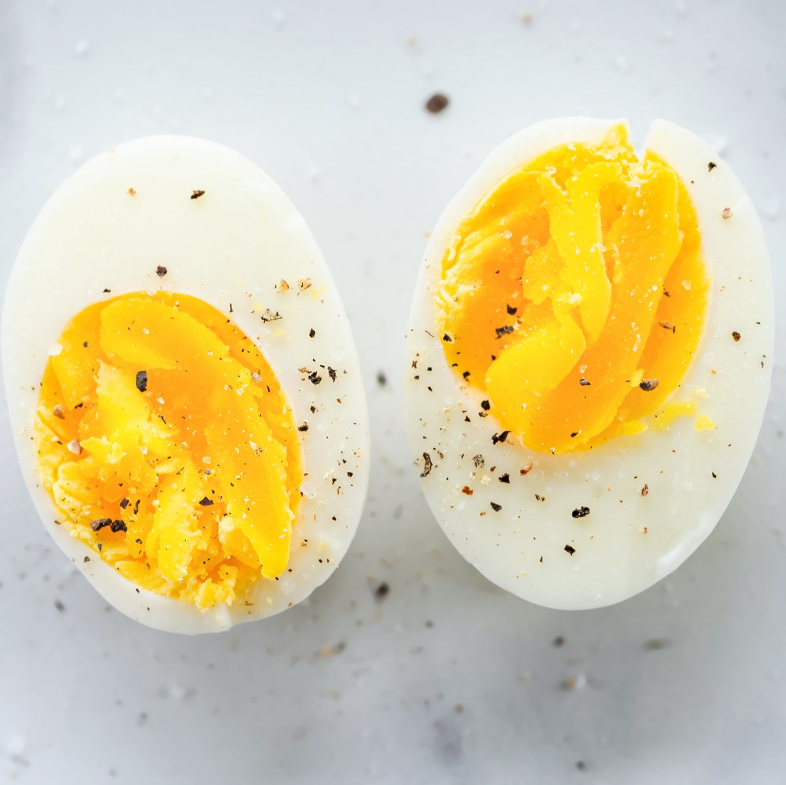

WE GOT EGGGGGSSSSS

A simple, yet high in protein delicacy that will make turn your office into a gas chamber from your flatulance.
What you need for this:
- Lots of eggs (I recommend farm fresh, but make sure they are washed)
- A solid sturdy pot
How To Basic (jk)
- Go to your sink and put water into your trusty pan
- Wait for the water to boil (pro-tip! Add some salt to it to make it boil quicker!)
- Once the water is boiling, gently place WASHED eggs into boiling water
- Once eggs start floating, remove heat and let them cool
- Peel back the shell, salt and pepper lightly, and enjoy!